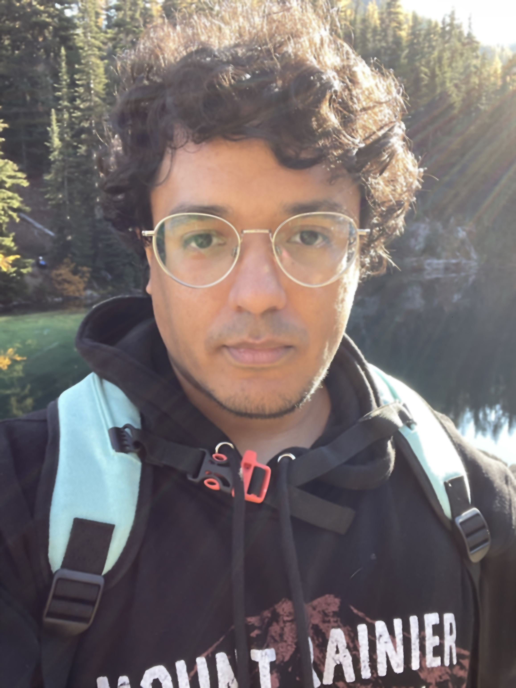

Edwin Pacheco
Email: edwin dot pacheco at bellevue college dot edu
Bio:
I'm Edwin, a student at Bellevue College pursuing a degree in Software Development. I moved to Washington State three years ago from Florida, where I spent
a majority of my life. When moving here I decided I wanted to expand my skills and start on a meaningful career after finishing school. I'm currently set to
on the Bachlor's program starting next Winter. I'm excited to explore my potential and have fun learning along the way!
Education:
I'm a current student at Bellevue College. My only other educational experience comes from technology magnet grade schools.
Experience:
I don't come from a coding background, aside from a few classes involving HTML in the past. I currently work in training search engines and AI how to
more accurately interpret queries. So far my coding experience comes from the courses I've taken at Bellevue College.